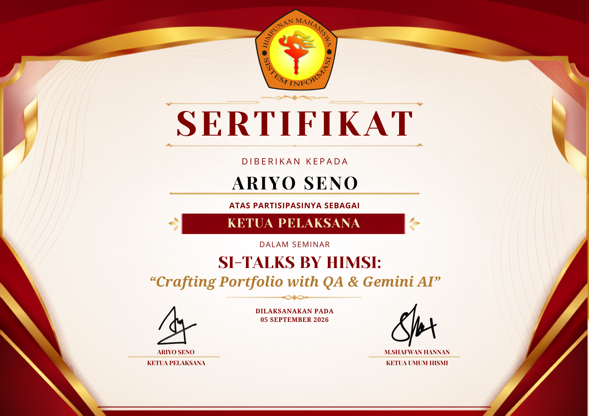

HIMSI Gunadarma
Ketua Pelaksana SI Talks by HIMSI
Memimpin dan mengoordinasikan seluruh panitia dalam penyelenggaraan seminar "Crafting Portfolio with QA & Gemini AI" oleh HIMSI Universitas Gunadarma.